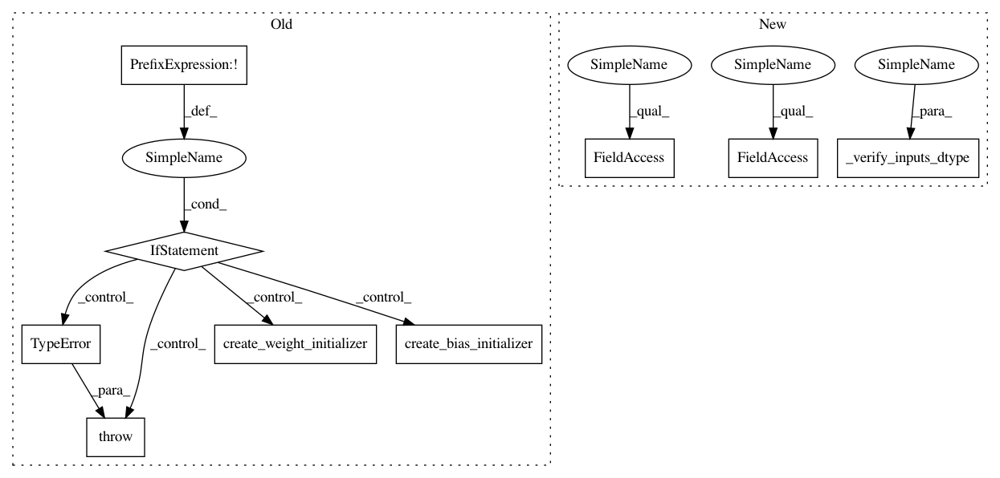

13c724a1b3dad1d5eddb51b851c39671982dbb69,sonnet/python/modules/conv.py,CausalConv1D,_build,#CausalConv1D#Any#,1679
Before Change
raise base.UnderspecifiedError(
"Number of input channels must be known at module build time")
if not tf.float32.is_compatible_with(inputs.dtype):
raise TypeError("Input must have dtype tf.float32, but dtype was {}".
format(inputs.dtype))
weight_shape = (self._kernel_shape[0], input_channels, self.output_channels)
bias_shape = (self.output_channels,)
if "w" not in self._initializers:
self._initializers["w"] = create_weight_initializer(weight_shape[:2])
if "b" not in self._initializers and self._use_bias:
self._initializers["b"] = create_bias_initializer(bias_shape)
self._w = tf.get_variable(
"w",
shape=weight_shape,
After Change
raise base.UnderspecifiedError(
"Number of input channels must be known at module build time")
_verify_inputs_dtype(inputs)
weight_shape = (self._kernel_shape[0], input_channels, self.output_channels)
bias_shape = (self.output_channels,)
if "w" not in self._initializers:
self._initializers["w"] = create_weight_initializer(weight_shape[:2],
dtype=inputs.dtype)
if "b" not in self._initializers and self._use_bias:
self._initializers["b"] = create_bias_initializer(bias_shape,
dtype=inputs.dtype)
self._w = tf.get_variable(
"w",
shape=weight_shape,
dtype=inputs.dtype,
initializer=self._initializers["w"],
partitioner=self._partitioners.get("w", None),
regularizer=self._regularizers.get("w", None))
pad_amount = int((self._kernel_shape[0] - 1) * self._rate[0])
if self._data_format == DATA_FORMAT_NCW:
padded_inputs = tf.pad(inputs, paddings=[[0, 0], [0, 0], [pad_amount, 0]])
else:
padded_inputs = tf.pad(inputs, paddings=[[0, 0], [pad_amount, 0], [0, 0]])
outputs = tf.nn.convolution(
padded_inputs,
self._w,
strides=self._stride,
padding=VALID,
dilation_rate=self._rate,
data_format=self._data_format)
if self._use_bias:
self._b = tf.get_variable(
"b",
shape=bias_shape,
dtype=inputs.dtype,
initializer=self._initializers["b"],
partitioner=self._partitioners.get("b", None),
regularizer=self._regularizers.get("b", None))
In pattern: SUPERPATTERN
Frequency: 4
Non-data size: 9
Instances
Project Name: deepmind/sonnet
Commit Name: 13c724a1b3dad1d5eddb51b851c39671982dbb69
Time: 2017-12-18
Author: noreply@google.com
File Name: sonnet/python/modules/conv.py
Class Name: CausalConv1D
Method Name: _build
Project Name: deepmind/sonnet
Commit Name: 13c724a1b3dad1d5eddb51b851c39671982dbb69
Time: 2017-12-18
Author: noreply@google.com
File Name: sonnet/python/modules/conv.py
Class Name: Conv2D
Method Name: _build
Project Name: deepmind/sonnet
Commit Name: 13c724a1b3dad1d5eddb51b851c39671982dbb69
Time: 2017-12-18
Author: noreply@google.com
File Name: sonnet/python/modules/conv.py
Class Name: CausalConv1D
Method Name: _build
Project Name: deepmind/sonnet
Commit Name: 13c724a1b3dad1d5eddb51b851c39671982dbb69
Time: 2017-12-18
Author: noreply@google.com
File Name: sonnet/python/modules/conv.py
Class Name: Conv3D
Method Name: _build
Project Name: deepmind/sonnet
Commit Name: 13c724a1b3dad1d5eddb51b851c39671982dbb69
Time: 2017-12-18
Author: noreply@google.com
File Name: sonnet/python/modules/conv.py
Class Name: Conv1D
Method Name: _build